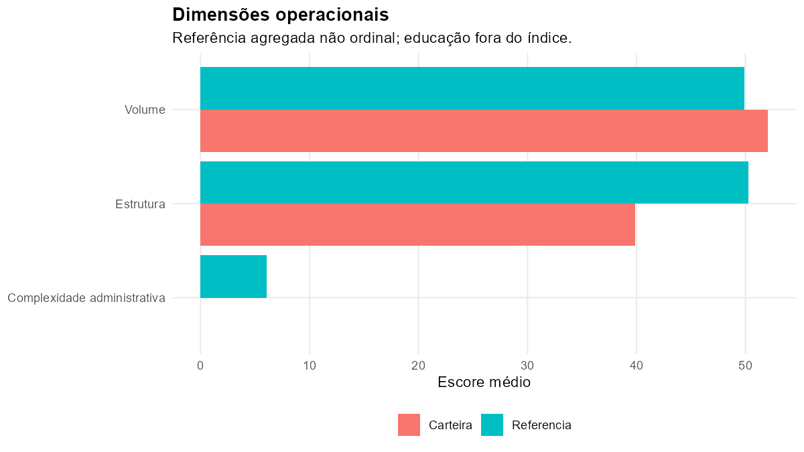
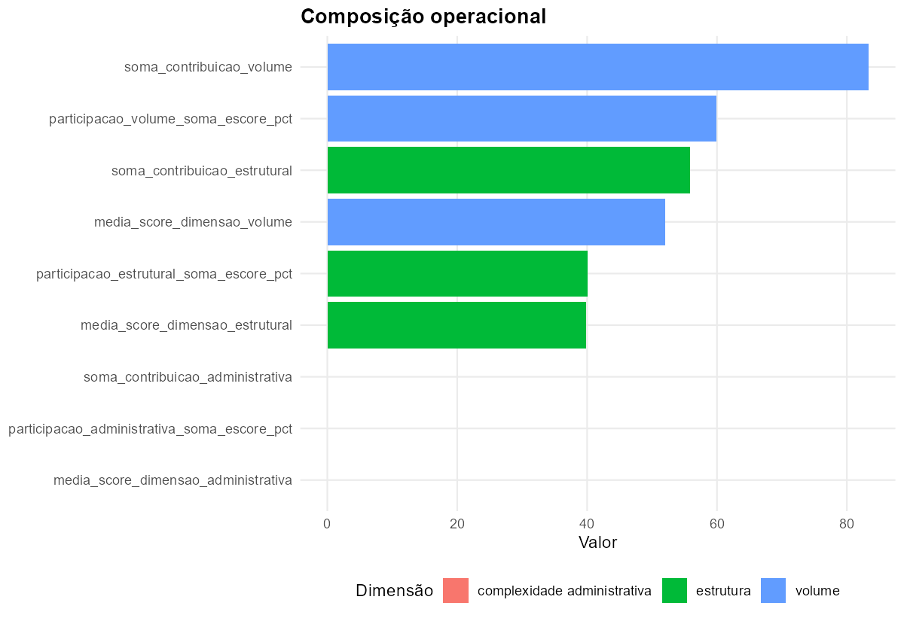
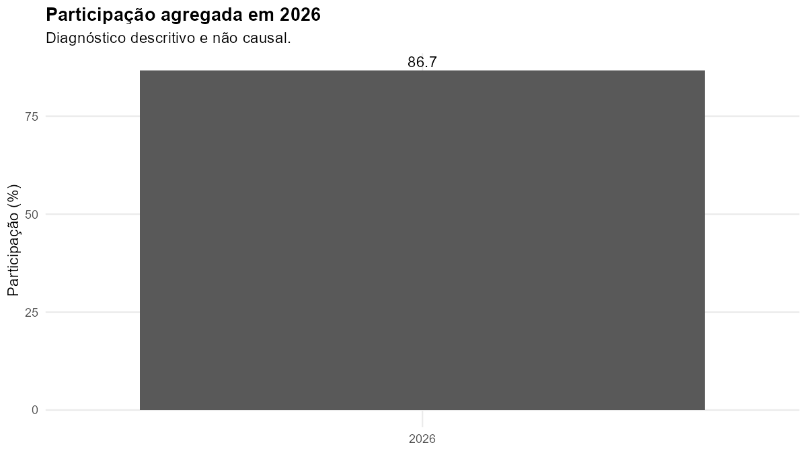

Carteira de Marian
Volume e carga operacional
Carga operacional total
139,1
Diferença para referência
-48,7
A referência é agregada e não ordinal. O índice não equivale à carga real total e não permite, isoladamente, afirmar sobrecarga ou subutilização.

Composição operacional

Diagnóstico educacional contextual

Os resultados educacionais são descritivos, observacionais e sujeitos a diferenças de participação e composição. Não integram o índice operacional, não representam efeito do assessoramento e não avaliam o desempenho da assessora.
Escolas da carteira
| ID | Escola | INEP | Vínculo administrativo | Índice | Volume | Estrutura | Administração | Ficha |
|---|
| ESC_010 | EMEF DEP MARCIRIO GOULART LOUREIRO | 43109128 | marian | 42,6 | 67,4 | 44,6 | 0,0 | abrir ficha |
| ESC_035 | EMEF PORTO NOVO | 43048200 | marian | 25,7 | 20,8 | 49,6 | 0,0 | abrir ficha |
| ESC_036 | EMEF PRES JOAO BELCHIOR MARQUES GOULART | 43108563 | marian | 29,7 | 43,8 | 34,8 | 0,0 | abrir ficha |
| ESC_045 | EMEF SAO PEDRO | 43167535 | marian | 41,2 | 76,4 | 30,4 | 0,0 | abrir ficha |
Execução 20260730_212403 — módulo 20.